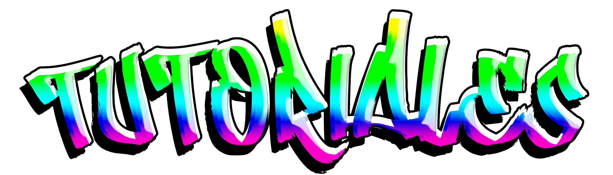
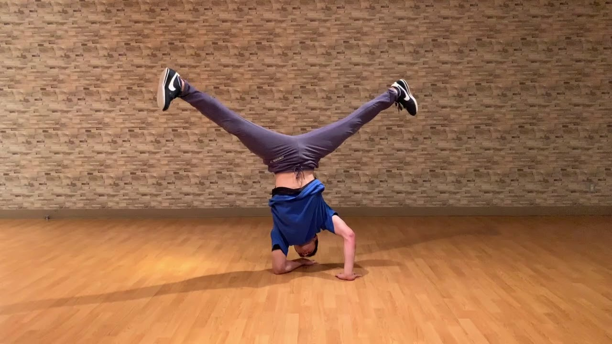
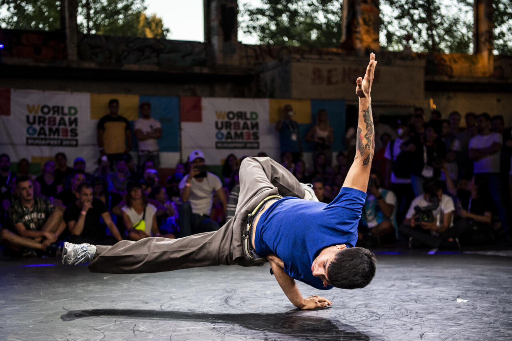
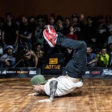
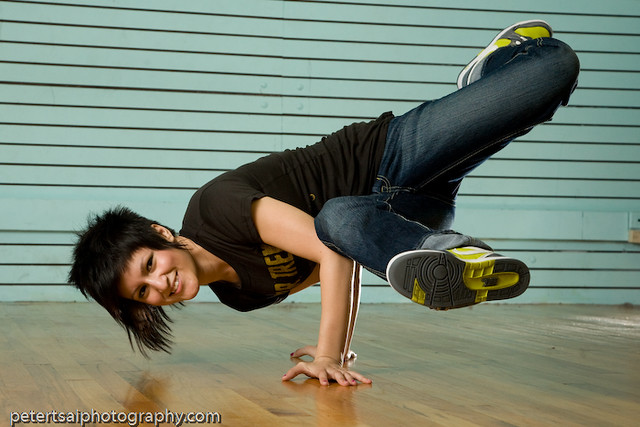
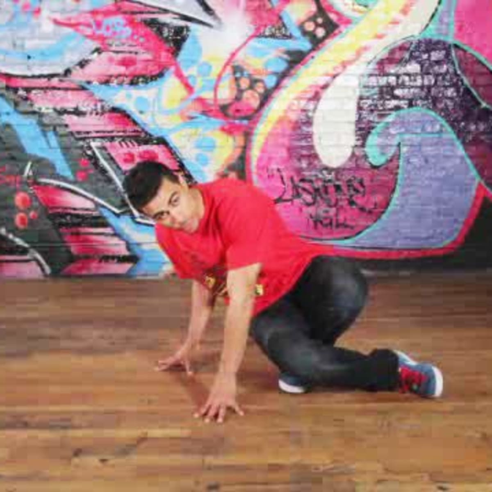
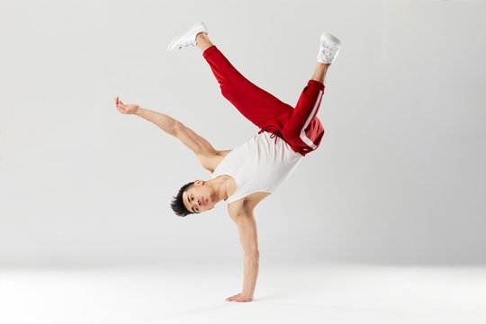
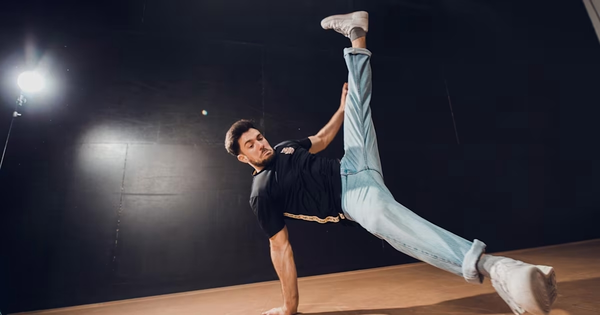

1. Movimientos basicos
Antes de empezar con los tutoriales hagamos un pequeño repaso de los movimientos basicos y mas utilizados en el breakdance
| Movimiento | Caracteristicas | Ejemplo |
Air Flare |
Se trata de un movimiento giratorio en el que solo se usan los brazos para equilibrar el cuerpo de un lado a otro en forma de círculo. El secreto de este paso es que los pies no deben tocar el suelo. |  |
Windmill |
También se le conoce como molinos. El chico, o la chica, gira todo su cuerpo en el suelo sin que los pies lo toquen. A mayor velocidad de este movimiento, mayor complejidad y espectáculo. |  |
Escorpión |
Este posiblemente sea uno de los pasos básicos de break dance más valorados y esperados cuando comienza el baile. Se trata del paso en el que la cabeza está en el suelo y el bailarín comienza a subir las piernas para dejarlas en el aire. |  |
Baby Freeze |
Se mantiene la cabeza en el suelo y con una mano apoyada se lleva el cuerpo a un lado y se usa la otra para dejarla en el aire y mantener el equilibrio. |  |
Six Step |
Se trata de una secuencia de pasos sobre el suelo con distintos movimientos. Entre ellos se puede encontrar el three step, five steps o el baby love). |  |
HandHop |
Se apoya una mano en el suelo y se dan pequeños saltos con ella, mientras la otra se mantiene abierta a la vez que los pies se abren y cierran. |  |
Flare |
Se apoyan ambas manos sobre el suelo y se gira el torso con el impulso de las piernas sin que estas toquen el suelo. |  |
2. Toprock
Como ya lo sabemos, el toprock es el incio del breakdance, y el que nos servira como calentamiento, a continuacion le dejamos un video de ejemplo
3. Downrock
El downrock (tambien conocido como footwork) es una parte fundamental del breakdance, son los pasos que se realizan en el suelo, a continuacion le dejamos un video de ejemplo
4. Power moves
Los power moves son los movimientos mas vistosos, asemejandoze mas a una acrobacia, pero requieren una gran velocidad y fuerza para ser ejecutados, a continuacion le dejamos un video de ejemplo
5. Freezes
Los freezes requieren de un gran equilibrio y coordinacion con la musica para ser ejecutados correctamente, a continuacion le dejamos un video de ejemplo
Continua practicando!!!
Ahora que ya estas mas experimentado puedes intentar pasos mas dificiles e interesantes, que tal si intentas realizar alguno de estos

Agradecemos que haya decidido visistar nuestro sitio web, nos gustaria que contestara un pequeño formulario acerca de su experiencia con las clases para mejorar varios aspectos de nuestra academia online en base a sus criterios